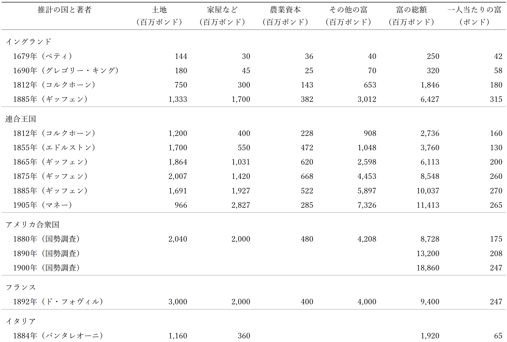

本章で見るのは、富がどのように増えてきたかである。富を消費の対象として見る場合と、生産の手段として見る場合とを、ここでは区別しない。したがって、富が資本として用いられる面をとくに取り出して論じる必要はない。
富の最も古い形は、おそらく狩猟や漁労に使う道具、身を飾る品であった。寒い地方では、これに衣服や小屋も加わった。このころ、動物を飼いならすことも始まった。しかし初めのうちは、動物は将来の備えとしてよりも、それ自体を手元に置くために世話されたのだろう。姿が美しく、そばにいることが楽しかったからである。身飾りと同じように、動物もまた、所有することから直接得られる満足のために望まれたのであって、まだ蓄えとしての意味は弱かった。やがて家畜の群れはしだいに大きくなった。牧畜の段階になると、それらは所有者の喜びと誇りであり、社会的地位を外に示すしるしでもあった。そして将来の必要に備える富の蓄えとしては、他のどのものよりも重要な位置を占めるようになった。
人口が増え、人々が農業に定着すると、富の目録の第一に置かれるようになったのは耕地である。土地の価値のうち、人の手による改良から生じる部分は、狭い意味での資本の主要な要素となった。なかでも井戸は、とくに目に見える改良であった。これに次いで重要だったのは、家屋、家畜、また地域によっては小舟や船であった。これに対して、農業に使う道具であれ、家内での製造に使う道具であれ、生産のための道具は、長いあいだ大きな価値をもたなかった。ただし一部の地域では、宝石やさまざまな貴金属が早くから強く求められ、富を蓄える公認の手段となった。また君主の宮殿を別にしても、比較的発達の浅い文明の多くでは、社会全体の富のかなり大きな部分が、主として宗教的な公共目的の建造物、道路、橋、運河、灌漑施設という形を取っていた。
数千年のあいだ、蓄えられた富の主な姿は、ほぼこうしたものだった。都市では、たしかに家屋や家財が大きな位置を占め、高価な原料の在庫もかなり重要であった。しかし都市の住民は、一人当たりで見れば農村の住民より豊かなことが多かったとはいえ、人数は少なかった。そのため、富の総量では農村に遠く及ばなかった。この時代を通じて、非常に高価な道具を必要とした仕事は、ほとんど水上輸送だけであった。織工の織機、農夫の犂、鍛冶屋の金床は、どれも構造が単純で、商人の船に比べれば取るに足りないものだった。ところが十八世紀になると、イングランドは高価な道具の時代を開いた。
イングランドの農民が使う道具は、長い時間をかけて少しずつ価値を増してきたが、十八世紀にはその進歩が速くなった。やがて水力が用いられ、ついで蒸気力が用いられるようになると、生産の各部門で、安価な手道具は急速に高価な機械へ置き換えられていった。かつて最も高価な道具が船であり、場合によっては航行や灌漑のための運河であったように、今では一般に交通手段がその位置を占めている。鉄道、路面鉄道、運河、ドック、船、電信、電話、水道がそれである。ガス工場も、設備の大部分がガスを配るために使われるので、ほぼこの部類に入る。その次に来るのが、鉱山、製鉄所、化学工場、造船所、印刷機械を備えた工場、その他の高価な機械で満たされた大工場である。
どの分野を見ても、知識が進み広まるにつれて、人間の努力を節約する新しい工程や機械が次々に採用されている。ただし、そのためには、最終の目的に達するずっと前の段階で、努力の一部をあらかじめ費やさなければならない。この進歩を正確に測ることは難しい。近代の多くの産業には、古代に対応するものがなかったからである。そこで、産物のおおまかな性格が変わっていない四つの大きな産業、すなわち農業、建築、織物製造、運輸について、過去と現在を比べてみよう。農業と建築では、今も手仕事が重要な役割を果たしている。それでも、高価な機械は大きく発達している。たとえば今日のインドの農民が使う粗末な道具を、進歩したローランド地方の農民の装備と比べればよい。また、近代の建築業者が使うれんが製造機、モルタル製造機、製材機、平削り機、成形機、溝切り機、蒸気クレーン、電灯を考えればよい。繊維業、とくに単純な製品を作る部門では、昔の作業者は数か月分の労働に相当する道具で足りていた。ところが近代では、雇われる男、女、子ども一人につき、設備だけで二百ポンドを超える資本、つまり五年分の労働に相当する資本があると見積もられる。また蒸気船の費用は、それを動かす人々の十五年以上の労働に相当することもある。イングランドとウェールズの鉄道に投じられた約十億ポンドの資本は、そこで雇われる三十万人の賃金労働者の二十年以上の仕事に相当する。
文明が進むにつれて、人間は新しい欲求を生み出し、それを満たすための新しく費用のかかる方法も発達させてきた。その歩みは、ときに遅く、大きく後戻りすることさえあった。だが現在の私たちは、年ごとに速さを増す進歩の中にあり、それがどこで止まるかは予想できない。あらゆる方面に新しい機会が開けており、それらは社会生活と産業生活のあり方を変えていくだろう。さらに人間は、遠い将来の欲求を見越して現在の努力を用いることで、新しい満足や労力を節約する方法を生み出し、そのために膨大な資本を役立てるだろう。満たすべき重要な新しい欲求がなくなり、将来に備えて現在の努力を有利に投じる余地もなくなり、富を蓄積しても報いがなくなるような静止状態に、私たちが近づいていると考える理由はない。人間の歴史全体が示しているのは、富と知識が増すにつれて、欲求もまた広がっていくということである。
資本を投じる機会が増えるほど、生活に必要な分を超える生産の余剰も増え、それが貯蓄する力を与える。生産技術が未熟だった時代には、強い支配民族が従属する多数の人々を、生活必需品を得るためだけに厳しく働かせた。それでも、気候が温暖で、必要なものが少なく、容易に得られる場合を除けば、余剰はほとんど生まれなかった。しかし生産技術が進み、将来の生産で労働を助け、支える資本が増えるたびに、さらに多くの富を蓄積するための余剰も増えていった。やがて文明は温帯で可能となり、さらに寒冷な気候のもとでも成り立つようになった。労働者を弱らせず、富を支える土台を壊さない条件のもとで、物質的な富を増やせるようになったのである。こうして一歩進むごとに富と知識は成長し、そのたびに、富を貯え、知識を広げる力も増していった。
将来をはっきり思い描き、それに備える習慣は、人類の歴史の中で、ゆっくりと、途切れながら発達してきた。旅行者たちは、少し先のことを考え、自分たちの力と知識で使える手段を用いさえすれば、総労働を増やさずに資源と楽しみを二倍にできる部族について語っている。たとえば、小さな野菜畑を野生動物から守るために、囲いを作るだけでよいのである。
しかし、こうした無気力でさえ、いまわが国の一部の階層に見られる浪費癖に比べれば、まだ理解しやすいのかもしれない。週に二ポンドから三ポンドを稼げる時期と、飢えに近い時期とを繰り返す人は珍しくない。彼らにとっては、仕事があるときの一シリングよりも、仕事がないときの一ペニーのほうが大きな意味をもつ。それでも、必要な時に備えておこうとはしない。その反対の極には守銭奴がいる。なかには、貯めることへの執着がほとんど狂気に近い者もいる。また自作農をはじめとするいくつかの階層にも、倹約を行き過ぎるほど重んじ、必需品まで切り詰めて、将来働く力そのものを弱めてしまう人々が少なくない。こうして彼らは、どの面から見ても損をしている。生活を本当に楽しむこともなく、蓄えた富から得る所得も、その富を自分自身に使っていれば得られたはずの、働いて稼ぐ力の増加には及ばない。
インドでは、また程度は低いがアイルランドでも、人々は目先の楽しみを控え、大きな我慢をしてかなりの額を蓄えることがある。ところが、その貯蓄を葬儀や結婚式の豪華な祝宴で使い尽くしてしまう。つまり彼らは、近い将来のためには時々備えるが、遠い将来に向けて持続的に備えることはほとんどしない。彼らの生産力を大きく高めた大工事は、主として、自己犠牲的とははるかに言いにくいイングランド人の資本によって作られたのである。
このように、富の蓄積を左右する原因は、国によっても時代によっても大きく異なる。二つの民族を比べても同じではないし、同じ民族の中の二つの社会階層を比べても、おそらく同じではない。それらは、社会的、宗教的な拘束に大きく左右される。さらに注目すべきことに、慣習の拘束力が少しでも緩むと、同じ条件で育った隣人同士であっても、浪費するか倹約するかという習慣は、個人の性格の違いによって大きく、しかもしばしば異なるようになる。
初期の時代に倹約があまり行われなかった大きな理由は、将来のために備えても、その成果を自分で享受できるとは限らなかったことにある。蓄えたものを守れるほどの力を持っていたのは、すでに富んでいる者だけだった。勤勉で自制心のある農民が、わずかな富をこつこつ積み上げても、それがより強い者の手に奪われるだけなら、周囲の人々にとっては、楽しみも休息も得られる時に味わっておけ、という教訓になった。イングランドとスコットランドの境界地方は、絶えず襲撃にさらされていた間、ほとんど進歩しなかった。十八世紀のフランス農民も、貧しく見せていなければ徴税人の略奪を免れられなかったため、ほとんど貯蓄しなかった。アイルランドの小作農も、四十年前でさえ多くの地所で、地主から法外な地代を求められないように、同じことをせざるをえなかった。
このような不安は、文明世界ではほとんど姿を消した。しかしイングランドでは、前世紀初めの救貧法が残した影響に、今なお苦しんでいる。救貧法は、労働者階級に新しい形の不安を持ち込んだからである。この制度のもとでは、賃金の一部が事実上、救貧扶助として支給され、その扶助は勤勉さ、倹約、先を見通す力が乏しい者ほど多く受け取れるように配分された。そのため多くの人々は、将来に備えるのは愚かなことだと考えるようになった。この悪い経験から生まれた慣習や感覚は、今なお労働者階級の進歩を大きく妨げている。現在の救貧法の根底にも、少なくとも名目上は、国家は困窮だけを考慮し、功績を考慮すべきではないという原則がある。この原則も、力は弱いながら、同じ方向に作用している。
もっとも、この種の不安も小さくなりつつある。貧しい人々に対する国家と個人の義務について、より開明的な見方が広がるにつれて、自助に努め、自分の将来に備えようとした人々は、怠惰で無思慮な人々よりも社会からよく世話される、ということが日ごとに事実に近づいている。しかし、この方向での進歩はなお遅く、まだ多くの課題が残っている。
貨幣経済と近代的な取引習慣の発達には、富の蓄積を妨げる面がたしかにある。浪費に流れやすい人々の前に、新しい誘惑を置くからである。昔なら、よい家に住みたければ、自分で家を建てなければならなかった。今では、借りられるよい家が豊富にある。以前なら、よいビールを飲みたければ、よい醸造所を持つ必要があった。今では、自分で造るより安く、よいものを買える。本も買わずに図書館から借りられる。家具の代金を払う前に、家に家具をそろえることさえできる。こうして近代の売買と貸借の制度は、新しい欲求の広がりと結びつき、新しい浪費を生む。そして将来の利益を、現在の利益の下に置きやすくする。
しかし反対に、貨幣経済は、将来の支出を向けられる用途を増やす。原始的な社会では、将来に備えてある物を蓄えても、実際にはその物ではなく、蓄えなかった別の物を必要とすることがある。また、将来生じる多くの欲求には、財をそのまま蓄えるだけでは直接備えられない。だが、貨幣所得を生む資本を蓄えておけば、必要が生じた時に、その欲求を満たすものを自由に買うことができる。
さらに近代の取引方法は、事業に携わるよい機会を持たない人々にも、資本を安全に投資し、収入を得る道を開いた。農業でさえ、一定の条件のもとでは土地が信頼できる貯蓄銀行の役割を果たすが、そのような機会すらない人々にとっても、近代の取引方法は同じ働きをした。こうした新しい機会は、そうでなければ蓄えようとしなかった人々にも、老後への備えを促した。そして富の成長にいっそう大きく作用したのは、人が死後に妻子へ確実な所得を残すことを、はるかに容易にした点である。結局のところ、家族への愛情こそが、貯蓄の主な動機だからである。
たしかに、富が自分や他人にどれほどの幸福をもたらすかをほとんど考えず、ただ手元の富が増えていくこと自体に強い喜びを感じる人々もいる。彼らを動かしているものには、獲物を追うような本能、競争相手を追い越したいという欲望、富を得る力を示したいという思い、そして富の所有によって力や社会的地位を得たいという野心がある。また、かつて本当に金を必要としていた時期に身についた習慣が、反射のように働き、富を蓄えることそのものに、人工的で理性に乏しい喜びを与えることもある。しかし、家族への愛情がなければ、今、懸命に働き、用心深く貯蓄している多くの人々は、自分の一生を快適に過ごせるだけの年金を確保する以上には努力しないだろう。保険会社から年金を買うか、退職後に毎年、所得だけでなく資本の一部も取り崩すように計画すれば、それで足りるからである。前者の場合、死後には何も残らない。後者の場合でも、予定していた老後のうち、死によって使われずに終わった部分の備えが残るだけである。人々が主に自分自身のためではなく家族のために働き、貯蓄していることは、退職後も貯蓄から得る所得以上をめったに使わず、蓄えた富を家族に残そうとする事実に表れている。また、この国だけでも、毎年二千万ポンドが保険契約として貯蓄されており、それは貯蓄した人々の死後にだけ利用できる。
人の精力と企業心を強く刺激するものは、人生で上昇し、自分が出発した位置よりも高い社会の段階から家族を出発させたいという希望である。これほど強い刺激はほとんどない。この希望は、安楽や普通の楽しみを求める欲望を取るに足りないものにし、ときには繊細な感受性や高い志までも損なうほどの圧倒的な情熱になりうる。しかし、今の世代のアメリカにおける驚くべき富の成長が示しているように、それは人を強力な富の生産者にも蓄積者にもする。ただし、その富がもたらす社会的地位を急いで手に入れようとしすぎる場合は別である。その場合には、野心は、先を考えない放縦な気質と同じくらい大きな浪費へと人を導きうる。
最も大きな貯蓄をするのは、乏しい資力の中で厳しい労働に育ち、事業で成功してからも簡素な習慣を保ち、派手な支出を軽蔑する人々である。彼らは、死ぬ時になって、世間が思っていた以上に富んでいたと思われることを望む。このような性格は、古くからありながら活力を保っている国の、静かな地方に多い。イングランドの農村部の中間層では、対仏大戦争の圧迫とその後の重税の時期から一世代以上にわたり、この性格がごく普通に見られた。
次に、蓄積がどこから生まれるかを見ておこう。人が貯蓄できるかどうかは、所得が必要な支出をどれだけ上回るかにかかっている。この余りは、当然ながら富裕な人々のところで最も大きい。この国では、大きな所得の多くは主として資本から得られるが、小さな所得ではそうでないものが多い。さらに今世紀初めのイングランドでは、商業に携わる階級のほうが、地方の地主階級や労働者階級よりも、はるかに強い貯蓄の習慣を持っていた。こうした事情が重なったため、前の世代のイングランドの経済学者たちは、貯蓄はほとんど資本の利潤からだけ行われるものだと考えた。
しかし、近代のイングランドに限って見ても、地代、専門職の所得、雇われて働く人々の所得は、蓄積の重要な源泉である。文明の初期のあらゆる段階では、むしろそれらこそが蓄積の主な源泉であった。加えて、中間層、とくに専門職の階級は、子どもの教育に資本を投じるため、つねに大きな犠牲を払ってきた。労働者階級の賃金のかなりの部分も、子どもの健康と体力を育てるために使われている。旧来の経済学者は、人間の能力が、他の資本と同じく重要な生産手段であるという事実を、あまりに軽く扱っていた。これに対して私たちは、他の事情が同じなら、富の分配が変わり、資本家に回る分が少なくなり、賃金を受け取る人々に回る分が多くなっても、物質的生産の増加はむしろ速まる可能性が高く、物質的富の蓄積が目に見えて遅くなるとは限らない、と結論できる。もちろん、その変化が社会の安全を揺るがすような乱暴な方法で起こるなら、他の事情が同じとはいえない。しかしそれが静かに、混乱を伴わずに進み、多くの人々によりよい機会を与え、能率を高め、自尊の習慣を育て、次の世代にいっそう能率の高い生産者を生むのであれば、物質的富の蓄積にわずかな一時的抑制が生じたとしても、純粋に経済的な見地から見ても、必ずしも悪いことではない。そのような場合には、工場や蒸気機関を大量に増やすよりも、長い目で見て物質的富の成長を促すことがありうる。
富がよく分配され、国民が高い志を持つ社会では、公共の財産も蓄積されやすい。かなり豊かな民主社会のいくつかが、この形で行ってきた貯蓄は、私たちの時代が先人から受け継いだ最良の財産のうち、決して小さくない部分を占めている。また、各種の協同組合運動、住宅組合、共済組合、労働組合、労働者の貯蓄銀行などが成長していることも、同じことを示している。物質的富の直接の蓄積という点だけを見ても、国の資源は、旧来の経済学者が考えたように、賃金の支払いに使われたからといって、すべて失われるわけではないのである。
貯蓄の方法と、富の蓄積がどのように進むかを見てきた。ここで、需要の研究において別の角度から取り上げた、現在の満足と将来に延ばされた満足との関係に、もう一度戻ることにしよう。
すでに見たように、いくつかの用途に使える商品を手元に持つ人は、それらをできるだけ大きな満足が得られるように配分しようとする。ある用途から別の用途へ一部を移せば満足が増すと考えれば、彼はそのようにする。したがって配分が適切であるなら、それぞれの用途への投入は、最後にその用途へ振り向けてもよいと思える部分から得られる利益が、どの用途でも等しくなるところで止まる。言い換えれば、すべての用途で限界効用が同じになるように配分されるのである。
この原理は、用途がすべて現在のものである場合にも、一部が現在の用途で、他が将来の用途である場合にも変わらない。ただし後者の場合には、新たに考えなければならない点が加わる。主なものは二つある。第一に、満足を将来へ延ばすと、それが実際に享受されるかどうかについて不確実性が入り込む。第二に、人間の性質からいえば、現在の満足は、同じ程度と見込まれ、人間の生活で可能な限り確実な将来の満足よりも、一般には好まれやすい。ただし、それがいつも成り立つわけではない。
慎重な人は、人生のどの時期にも同じ資力から同じ満足が得られると考えるなら、おそらく資力を一生にわたってできるだけ均等に配分しようとする。将来、所得を得る力が足りなくなるおそれがあると思えば、資力の一部を必ず将来のために蓄えるだろう。その場合、蓄えたものが手元で増えるときだけでなく、減るとわかっているときにも貯蓄する。冬には不足するので、保存しても質がよくならない果物や卵を少し取り置くことがある。稼ぎを商売や貸付に回して利子や利潤を得る道がなければ、祖先の一部がしたように、少額のギニー金貨を蓄えておき、活動的な生活から退いたときに田舎へ持って行くだろう。彼らは、収入の多い時期に数ギニーを余分に使って得る満足よりも、そのギニーが老後に買ってくれる安楽のほうが役に立つと考えたのである。ただし、ギニーを守るには多くの手間がかかった。危険を負わせずにその手間から解放してくれる人がいれば、彼らは少額の料金を喜んで払ったに違いない。
したがって、蓄えられた富を有利に使う道がほとんどない状態も考えられる。多くの人は将来に備えたいと思っているが、財を借りたい人のうち、将来それを返すか、または同等の財を返すための十分な担保を出せる人は少ない、という状態である。このような場合、楽しみを先に延ばして待つことは、報酬を生むのではなく、むしろ不利益を伴う行為になる。自分の資力を他人に預けて保管してもらう人は、貸したものより多いものではなく、少ないものについての確実な約束しか期待できない。つまり、利子率は負になる。
このような状態は想像できる。しかし同じように、人々が働くことを強く望み、働く許可を得る条件として何らかの不利益を受けてもよいとする状態も想像できるし、それもほぼ同じくらいありうる。慎重な人にとって、資産の一部の消費を先に延ばすことがそれ自体で望ましいように、健康な人にとっては、仕事をすることもそれ自体で望ましい目的だからである。たとえば政治犯は、少しでも仕事を許されることを、たいてい好意と受け取る。人間性がこのようなものである以上、資本の利子を、物質的資源を享受するのを待つという犠牲への報酬と呼んでよい。報酬なしに多くを貯蓄する人は少ないからである。同じように、報酬なしに懸命に働く人は少ないので、賃金を労働の報酬と呼ぶのである。
現在の楽しみを将来のために手放すことを、経済学者はこれまで禁欲と呼んできた。しかし、この言葉は誤解を招きやすい。富を最も多く蓄えるのは、たいてい非常に裕福な人々であり、その中にはぜいたくな暮らしをしている者もいる。そうした人々が、節制という意味で禁欲しているとは言えない。経済学者が言おうとしたのは、人がいま消費できるものを消費せず、将来の資源を増やすために残すなら、その消費を控えることが富の蓄積を増やす、ということである。だが、この語は誤解されやすいので、用いないほうがよい。富の蓄積は、一般に、享受を先へ延ばすこと、あるいは享受を待つことから生まれる。言い換えれば、それは人間の将来志向、つまり将来を現実のものとして思い描く力に依存している。
蓄積の「需要価格」、つまり人が将来のために働き、待つことによって環境から得る将来の楽しみは、さまざまな形を取る。しかし、その本質は同じである。風雪に耐える小屋を建てた農民は、近隣の人が少ない労力で建てた小屋に雪が吹き込むとき、自分の小屋から余分な快適さを得る。これは、彼の労働と待機に対する報酬である。またそれは、遠い将来の災いに備え、将来の欲求を満たすために賢く費やされた努力が、目先の満足を衝動的につかむ場合よりも大きな生産力を持つことを示している。したがって、それは引退した医師が、機械の改良に用いられるよう工場や鉱山に貸した資本から得る利子と、根本的に同じものである。そして利子は数値ではっきり表せるので、富の他の形がもたらす用益の典型、または代表と見なしてよい。
ここで問題にしたいことに限れば、人が待って得る享受への支配力をどこから得たかは問わなくてよい。それを、ほとんどすべての享受の本来の源である労働によって直接得たのか、交換や相続によって得たのか、正当な取引や良心を欠いた投機によって得たのか、あるいは略奪や詐欺によって他人から得たのかは、いまの論点ではない。ここで関心があるのは二点だけである。第一に、富の成長は一般に、人が現在すぐ手にできる楽しみを、正しい形であれ誤った形であれ、意識的に先へ延ばすことを伴う。第二に、そのように待とうとする意思は、将来を生き生きと思い描き、それに備える習慣に依存している。
ここで、人間の性質についての一つの命題を、もう少し詳しく見ておきたい。すなわち、現在に同じだけの犠牲を払って得られる将来の快楽が大きくなれば、ふつう人々は、その現在の犠牲をより多く払うようになる、ということである。たとえば村人が、小屋を建てる木材を森から運んでこなければならないとしよう。森が遠くなるほど、一日の労働で木を運んでも、将来得られる住まいの快適さは小さくなる。おそらく、一日の労働で蓄えられる富から得る将来の利益も小さくなる。こうして、現在の一定の犠牲に対して得られる将来の快楽が小さければ、彼らは小屋を大きくしようとはしにくくなり、全体として木材を得るための労働量も減るだろう。ただし、この規則にも例外はある。慣習によって一つの型の小屋にだけ慣れているなら、森が遠く、一日の労働の成果から得られる用益が小さいほど、彼らはかえって多くの日数を費やすことになる。
同じことは、富を自分で使わず、利子を取って貸し出す場合にも当てはまる。利子率が高いほど、貯蓄に対する報酬は大きくなる。安全な投資の利子率が四パーセントであれば、いま百ポンド分の楽しみを手放すことで、毎年四ポンド分の楽しみを期待できる。ところが三パーセントであれば、期待できるのは三ポンド分にすぎない。利子率が下がると、貯蓄によって得る将来の快楽のために、現在の快楽を手放してもよいと人が考える限界は、ふつう下がる。したがって一般には、人々はいま少し多く消費し、将来の享受に備える分を少なくする。しかし、この規則にも例外はある。
ジョサイア・チャイルド卿は、二世紀以上前にこう述べている。利子率の高い国では、商人は「大きな富を得ると商売をやめ」、その金を利子付きで貸す。なぜなら、その利益が「容易で、確実で、大きい」からである。これに対して利子率の低い国では、「彼らは代々商人を続け、自分たちと国家を富ませる」。これは当時だけの話ではない。今でも多くの人は、人生のほぼ盛りに事業から退く。つまり、人間や事物についての知識によって、以前にも増して能率よく事業を進められる時期に退いてしまうのである。またサージェントが指摘したように、老後のため、あるいは死後に家族を支えるため、一定の所得を用意するまでは働き貯蓄し続けると決めている人は、利子率が低ければ、利子率が高い場合よりも多く貯蓄しなければならない。たとえば、事業を退くために年四百ポンドの所得を用意したい、または死後に妻子のため年四百ポンドを保険で確保したいとする。現行の利子率が五パーセントなら、八千ポンドを蓄えるか、八千ポンドの生命保険に入ればよい。しかし四パーセントなら、一万ポンドを貯蓄するか、一万ポンドの生命保険に入らなければならない。
したがって、利子率が下がり続けても、世界の資本に毎年加わる額が増え続けることはありうる。とはいえ、将来のために同じだけ労働し、同じだけ我慢しても、そこから得られる将来の利益が小さくなれば、人々全体としては将来への備えを控える方向に動きやすい。現代の言い方をすれば、利子率の低下には、富の蓄積を抑える働きがある。人間が自然資源をよりよく支配できるようになれば、利子率が低くても、多くを貯蓄し続けるかもしれない。しかし人間性が今のままである限り、利子率が下がるたびに、そうでなければしたはずより多く貯蓄する人よりも、少なく貯蓄する人のほうが、はるかに多くなると考えられる。
富の蓄積を左右する原因と利子率との関係は、経済学の多くの問題にかかわっている。そのため、これを考察の一箇所にまとめて扱うことは容易ではない。本編では主として供給の側を扱うが、ここでは資本の需要と供給との一般的な関係を、ひとまず示しておく必要がある。すでに見たように、富の蓄積はさまざまな原因に左右される。慣習、自制する習慣、将来を現実のものとして思い描く習慣、そして何よりも家族への愛情の力である。安全はそのための必要条件であり、知識と知性の進歩は、多くの面でそれを助ける。
資本に支払われる利子率、つまり貯蓄の需要価格が上がれば、貯蓄量は増える方向に動く。自分や家族のために一定額の所得を確保しようと決めている少数の人々は、利子率が高いと、低い場合より少ない貯蓄で足りる。それでも、利子率の上昇が貯蓄したいという気持ちを強めることは、ほとんど一般的な法則といってよい。またそれは、しばしば貯蓄する力そのものも増す。むしろ、利子率の上昇は、生産資源の能率が高まったことを示している場合が多い。ただし旧来の経済学者は、賃金を犠牲にして利子または利潤が上がれば、つねに貯蓄する力も増すかのように述べた点で行き過ぎていた。彼らは、国民全体から見れば、労働者の子どもに富を投じることも、馬や機械に投じることと同じように生産的であることを忘れていた。
ただし、一年ごとに新しく投資される富は、すでに積み上がっている富に比べれば小さい。そのため、年間の貯蓄率がかなり高まったとしても、どの一年を見ても、蓄積された富全体が目に見えて増えるとは限らない。
富の成長を統計でたどることは、これまで十分に行われてこなかったし、その数字も誤解を招きやすい。理由の一つは、場所や時代が違っても比べられるような富の尺度を作ること自体が難しいからである。もう一つは、必要な事実を体系的に集める努力が欠けていたからである。アメリカ合衆国政府は、各人に財産の申告を求めている。結果は満足できるものではないが、それでもおそらく、私たちが利用できるものの中では最もよい資料である。
他国の富を推計するときは、ほとんどの場合、所得の推計を土台にし、その所得を何年分として資本に換算するかを決めなければならない。この年数は、まずその時点の一般的な利子率を考え、次に、ある形の富を使って得られる所得のうち、どれだけをその富そのものが持つ恒久的な収益力に帰すべきか、どれだけをそれを用いる労働や資本そのものの消耗に帰すべきかを考えて選ばれる。後者の点は、急速に価値が下がる製鉄所では特に重要であり、まもなく掘り尽くされそうな鉱山ではさらに重要である。こうしたものは、少ない年数分でしか資本に換算できない。これに対して、土地の収益力は高まる可能性が大きい。その場合、土地からの所得は非常に多い年数分として資本に換算しなければならない。これは、第二の点の後半について、反対向きの引当を置くものとみなせる。
土地、家屋、家畜は、いつの時代、どの土地でも、富の最も重要な三つの形であった。ただし土地は、ほかの財とは性質が違う。土地の価値が上がるのは、多くの場合、土地そのものが増えたからではなく、土地がいっそう希少になったからである。だから土地価値の上昇は、人々の欲求を満たす手段が増えたことを示すというより、欲求そのものが大きくなったことを示している。たとえば一八八〇年のアメリカ合衆国の土地は、連合王国の土地とほぼ同じ価値、フランスの土地のおよそ半分の価値と見積もられていた。その貨幣価値は、百年前にはほとんど問題にならないほど小さかった。二百年または三百年後に、アメリカ合衆国の人口密度が連合王国とほぼ同じになれば、前者の土地は後者の少なくとも二十倍の価値を持つだろう。
中世初期のイングランドでは、土地全体の価値は、その土地で飢えに耐えながら冬を越していた、骨太だが小柄な少数の家畜の価値より、はるかに小さかった。現在では、最良の土地の多くは家屋や鉄道などの用地として扱われている。家畜も、総重量で見れば当時の十倍をおそらく超え、質もよくなっている。さらに、当時は知られていなかった農業資本も豊富にある。それでも農地は、農場にある資産の三倍を超える価値を持っている。対仏大戦争の重圧があった数年間には、イングランドの土地の名目価値はほぼ二倍になった。その後、自由貿易、輸送の改善、新しい国々の開拓などによって、農業用地の名目価値は下がった。またそれらの変化は、商品を基準に見た貨幣の一般的な購買力を、大陸よりもイングランドで高めた。前世紀の初めには、二十五フランは、フランスやドイツで、一ポンドがイングランドで買えるより多くのもの、とくに労働者階級に必要なものを買うことができた。しかし現在では、その有利さは逆になっている。このため、近年のフランスとドイツの富の成長は、イングランドと比べると、実際以上に大きく見える。
このような事実に加えて、利子率の低下も考えなければならない。利子率が下がると、どの所得を資本として評価する場合にも、その所得を何年分で買うかという年数が増える。その結果、一定の所得を生む財産の価値は高く見積もられる。したがって国富の推計は、もとになる所得統計が正確であっても、かなり誤解を招くことがある。それでも、そのような推計にまったく価値がないわけではない。
ギッフェン卿の『資本の成長』とキオッツァ・マネー氏の『富と貧困』には、次の表に掲げる多くの数字について、示唆に富む議論がある。ただし、両者の推計には食い違いがあり、そのこと自体が、この種の推計には大きな不確実性がつきまとうことを示している。マネー氏が土地、すなわち農場建物を含む農地の価値について出した推計は、おそらく低すぎる。ギッフェン卿は公共財産の価値を五億ポンドと見積もった。そして、国内で保有される公債については、公共財産の側では負債となり、私有財産の側では資産となるため、相殺されるものとして省いた。これに対してマネー氏は、公道、公園、建物、橋、下水、照明と水道、路面鉄道などの総価値を十六億五千万ポンドと見積もり、そこから公債十二億ポンドを差し引いて、公共財産の純価値を四億五千万ポンドとした。この扱いによって、彼は国内で保有される公債を私有財産に数え入れることができる。さらに彼は、連合王国で保有される外国証券およびその他の外国財産を十八億二千一百万ポンドと見積もっている。これらの推計は、主として所得の推計に基づいている。所得統計については、ボウリー氏の『一八八二年以来の国民的進歩』および一九〇四年九月の『エコノミック・ジャーナル』に収められた有益な分析を参照できる。その概要を次の表に示す。

ギッフェン卿は、『統計ジャーナル』第六十六巻五八四ページで、一九〇三年の大英帝国の富を次のように見積もっている。連合王国は百五十億ポンド、カナダは十三億五千万ポンド、オーストラレーシアは十一億ポンド、インドは三十億ポンド、南アフリカは六億ポンド、帝国のその他の地域は十二億ポンドである。
イングランド各地で富の相対的な大きさがどう変わったかについては、ロジャーズが課税用に作られた各州の評価額を手がかりに、暫定的な歴史を描き出している。フランスについては、ダヴネル子爵の大著『所有の経済史』一二〇〇年から一八〇〇年に豊富な資料が収められている。また、フランスと他国における富の成長を比較する研究は、ルヴァスール、ルロワ・ボーリュー、ネマルク、ド・フォヴィルによって進められている。
クラモンド氏は、一九一九年三月に銀行家協会で講演し、連合王国の国富を二百四十億ポンド、国民所得を三十六億ポンドと見積もった。また、同国が保有する外国投資の純額は十六億ポンドまで減ったと計算した。その理由は、近年、十六億ポンド分の証券を売却し、さらに十四億ポンドを借り入れたためである。差し引きすれば、同国はなお二十六億ポンドの債権を持つ国に見える。しかし、その大部分は、十分な担保のある債権とはみなしにくい。